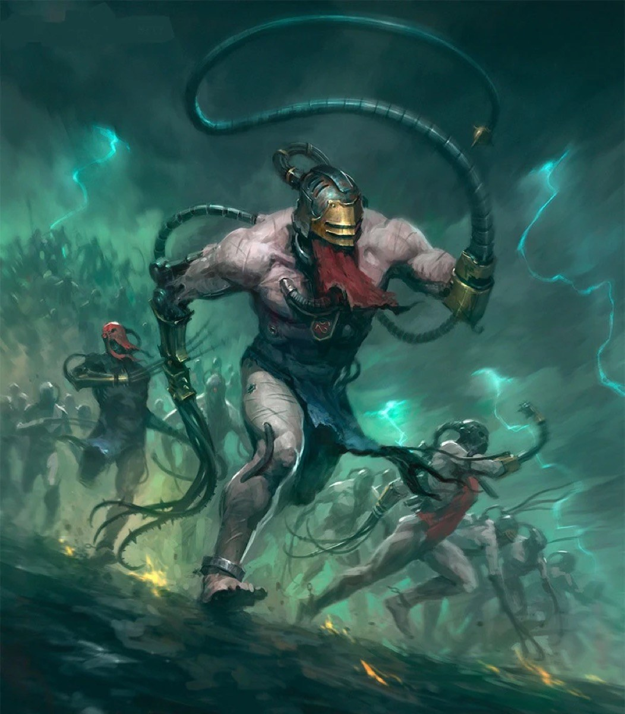

Arco-flagellant
| Arco-flagellant | |
|---|---|
 An arco-flagellant unleashed in battle, from a votive fresco of the Adepta Sororitas | |
| Type | Penitent cyborg; a form of servitor |
| Created by | Ecclesiarchy, with the Adeptus Mechanicus |
| Origin | After the Age of Apostasy, M36 – M37 (estimated) |
| Sentence | Arco-flagellation, for heresy and grave crimes against the faith |
| Controlled by | Pacifier helm; activation by a priest or handler |
| Weapons | Electro-flails, flayers, heavy shears |
| Users | Adepta Sororitas, Adeptus Ministorum priests, Ordo Hereticus |
An arco-flagellant is a condemned man or woman transformed by the Ecclesiarchy into a living weapon. The penitent's arms are replaced with electro-flails or blades, their mind is reduced and filled with holy images, and their body is fitted with injectors that, in battle, flood it with combat drugs. When the pacifier helm that keeps an arco-flagellant docile is switched off, it charges the enemy in a frenzy and fights until it is destroyed or its body gives out.[1][2]
Arco-flagellation is a sentence of death, but it is held to be a merciful one. It is passed on those whose sins are grave but not beyond redemption, and the agony of the process and the death that follows are believed to purify the soul, so that the penitent may stand before the Emperor in the afterlife. Arco-flagellants are used by the Adepta Sororitas, by preachers of the Adeptus Ministorum and by Inquisitors of the Ordo Hereticus.[1]
History
[edit]The origin of arco-flagellation is not recorded. The practice is first clearly described in the centuries after the Age of Apostasy, when the Decree Passive of 288.M36 forbade the Ecclesiarchy to keep "men under arms". The Ecclesiarchy's critics have long argued that the arco-flagellant, being in law a sentenced penitent and not a soldier, was one of the means by which the church kept a fighting force within the letter of the decree.[1][a] By the 41st millennium the sentence was in use across the Imperium, wherever there was an Ecclesiarchy court and the technology to carry it out.[3]
Process
[edit]The condemned is handed over to tech-priests of the Adeptus Mechanicus working for the Ecclesiarchy. The subject is partially lobotomised, and both arms are removed and replaced by weapons: most often electro-flails, sometimes heavy industrial shears or flayers. A battery of chemical injectors is grafted along the spine, and the head is enclosed in a pacifier helm, which contains a simple mind-impulse unit.[2]
While the helm is active, the arco-flagellant stands still or shuffles where it is led, in a state of dull bliss, its mind filled with hymns and holy images of the Ecclesiarchy. When the helm is deactivated, the injectors release a mixture of combat drugs, among them frenzon, and the arco-flagellant becomes a whirlwind of violence. It attacks any living thing that has not been marked as friendly and pays no heed to its own wounds. It fights until it is killed, or until its metabolism collapses under the drugs.[2][4]
Because the process requires advanced bionics and the services of the Mechanicus, the sentence is passed only on technologically advanced worlds.[3]

Use
[edit]Arco-flagellants are disposable shock troops. They are used singly by Inquisitors who need a crude weapon for a single task, such as the destruction of a nest of heretics, or released in packs ahead of the faithful in a war of faith. Priests of the Ministorum lead them into battle with the Frateris Militia and the Sisters of Battle and with regiments of the Astra Militarum.[4]
The Sisters of Battle value arco-flagellants as instruments of redemption, but treat them warily. To an arco-flagellant, any being that has not been marked by its handler is a target, and the Sisters keep them at a distance and use them only when they are past concern for what else may be destroyed.[2]
Doctrine
[edit]The Ecclesiarchy teaches that the arco-flagellant's suffering is an act of penance, and that the death it brings is the end of a road to redemption. Critics within the Imperium, including some Inquisitors of the Ordo Hereticus, have noted that the arco-flagellant is in effect a weapon of the Ecclesiarchy, and argue that it should be watched as closely as any other.[2]
In war
[edit]Arco-flagellants have been recorded in most of the great wars of faith of the Imperium since the 37th millennium. They fought beside the Orders Militant in the Third War for Armageddon from 998.M41, where the Ecclesiarchy sent penitents in large numbers against the Orks, and they have been used against the cults that rose across the Imperium after the opening of the Great Rift in 999.M41. In the Indomitus Crusade, from about 000.M42, the Ecclesiarchy's courts have been ordered to pass the sentence more often, so that the faithful might be spared on the battlefield.[5][4]
Timeline
[edit]- 288.M36: the Decree Passive forbids the Ecclesiarchy to keep "men under arms"
- Late M36 – M37 (estimated): arco-flagellation first described in Ecclesiarchy records
- 998.M41: arco-flagellants in the Third War for Armageddon
- From c. 000.M42: the sentence passed more often to supply the Indomitus Crusade
See also
[edit]Notes
[edit]- ^ The origin is estimated from the earliest descriptions of the practice, in records of the late 36th and 37th millennia. Some Ecclesiarchy tradition claims an older origin among the penitent cults of the Imperial Cult.
References
[edit]- ^ a b c Liber Ecclesiasticus (M37). Adeptus Ministorum.
- ^ a b c d e Malleus Penitentis: On the Instruments of the Faith (sealed, M41). Ordo Hereticus.
- ^ a b Codex Imperialis (rev. 980.M41). Adeptus Terra.
- ^ a b c Lexicanum Martialis. Officio Militaris.
- ^ Records of the Indomitus Crusade (ongoing). Office of the Lord Commander.